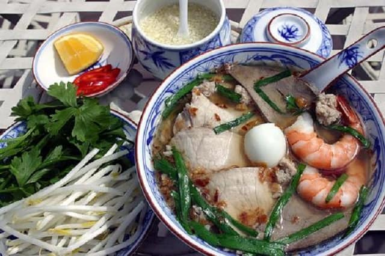

4. Hủ tiếu Nam Vang
Hủ tiếu vốn là món ăn của người Tàu phiêu bạt mang theo vào vùng đồng bằng sông Cửu Long. Ở Sài Gòn có rất nhiều quán hủ tiếu nhưng món này dần trở thành khẩu vị chính của người dân Nam Bộ.
Người Sài Gòn đã nấu hủ tiếu bằng nước xương ống của heo cùng với một ít mực khô, tôm he khô để lại một thứ nước trong vắt màu vàng nhạt, ngọt lịm. Bạn có thể dễ dàng thấy, trải lên sợi bánh là thịt nạc, gan tim, tôm tươi vừa luộc chín có vị ngọt tự nhiên.

Hủ tiếu Nam vang có mùi vị độc đáo là do nêm vào một vài muỗng tỏi giã nhuyễn ngâm dấm thanh. Tô hủ tiếu múc ra bát lấn chìm dưới làn nước trong veo là sợi bánh trắng phau, tô điểm những lát thịt, tim gan cùng với màu hồng tươi của con tôm ẩn mình dưới vài cọng hành xanh ngắt. Rưới thêm vài muỗng tỏi ngâm cộng thêm vài lát ớt chín vàng hòa cùng với lá hẹ tạo nên tổng thể màu sắc

Hủ tiếu thật đã trở thành khẩu vị của một thành phố đông đúc và sầm uất bậc nhất đã góp phần làm phong phú thêm ẩm thực Sài Thành. Có rất nhiều quán hủ tiếu ở Sài Gòn, chỉ từ 45.000 đồng – 60.000 đồng/bát. Bạn có thể ghé qua quán hủ tiếu Nam Vang số 389 – 391 Võ Văn Tần, Quận 3 hoặc ghé qua Hủ tiếu Liến Húa nằm ở 312 An Dương Vương để thưởng thức nhé.